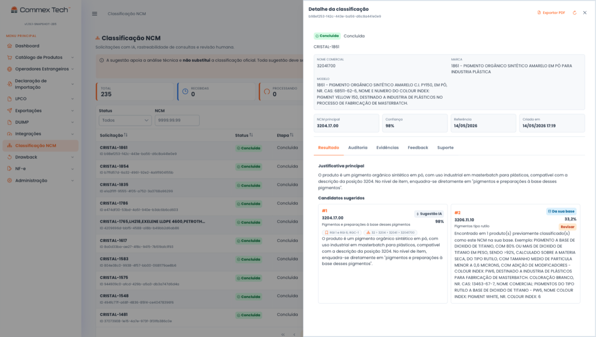

De 4 horas para 5 minutos por produto, com a base legal registrada
Um SKU novo toma de 3 a 4 horas de pesquisa de um analista sênior. A Commex Tech criou um agente especializado em classificação fiscal de NCM: ele sugere a NCM, mede a confiança de cada sugestão e registra a fundamentação, para o seu especialista revisar apenas os itens de menor confiança.
Rastreabilidade por SKU, pronta para auditoria e fiscalização.
O custo da rotina manual.
Na rotina manual, cada SKU novo consome de 3 a 4 horas de um analista sênior entre NCM, TIPI e NESH. Quanto mais itens entram no catálogo, mais tempo da equipe fica alocado em pesquisa.
Horas de analista sênior por item
São 3 a 4 horas de pesquisa em NCM, TIPI e NESH para cada item novo. Em catálogos que recebem SKUs todo mês, esse tempo pesa na folha de pagamento e no prazo do desembaraço.
Multa sem provisão no balanço
Uma classificação incorreta gera multa, retenção na aduana e passivo contábil sem provisão. Em muitas operações, não há registro de quem decidiu cada código nem da fundamentação usada.
Atualização da TIPI reabre o catálogo
Cada mudança na TIPI ou novo entendimento da Receita obriga a revisar o catálogo item por item, repetindo boa parte da pesquisa já feita.
O que o módulo faz.
A plataforma assume a parte braçal da pesquisa em NCM, TIPI e NESH. Para o seu time ficam só os itens em que a experiência do classificador faz diferença.
Agente especializado em classificação fiscal
O agente foi treinado com milhões de classificações de NCM e analisa descrição, composição e uso do produto antes de propor o código.
Score de confiança por item
Cada sugestão sai com um score de confiança. Em vez de conferir tudo, o analista revisa apenas os itens abaixo do limiar, e a decisão dele fica registrada.
Base legal registrada por SKU
Cada código fica registrado com as RGI e NESH aplicadas, o responsável e a data da decisão. O registro fica vinculado ao SKU e disponível para consulta e auditoria.
Reclassificação em lote
Quando uma parte do catálogo precisa ser reprocessada, a reclassificação em lote refaz o conjunto de uma vez. Cada item mantém o mesmo registro de responsável e fundamentação de uma classificação individual.
A tela de detalhe da classificação.
Cada NCM sugerida aparece com justificativa técnica, regras gerais aplicadas (RGI), candidatos alternativos e as abas de auditoria e evidências. Tudo exportável em PDF.

Tela real do módulo: sugestão do agente com justificativa, base legal e trilha de auditoria.
O histórico do catálogo fica na empresa.
Tempo por produto medido, risco documentado e um dossiê por SKU que pode ser apresentado à fiscalização, mesmo depois da saída de quem classificou.
As dúvidas mais comuns sobre o módulo.
O agente substitui o analista fiscal?
Não. O objetivo é tirar do analista as 3–4 horas de pesquisa por item, não a decisão. O agente pesquisa, sugere a NCM e monta a fundamentação; o score de confiança indica quais casos precisam passar pelo especialista, e é ele quem os valida. Na prática, o analista troca a pesquisa repetitiva pela revisão e pelo compliance da operação.
E se a sugestão estiver errada?
Sugestões com score abaixo do limiar entram na fila de revisão humana antes de valer para a operação. Toda classificação, automática ou revisada, entra no audit log com a fundamentação completa em RGI e NESH. Se um código precisar de correção depois, o histórico mostra o que foi decidido, quando e por quê.
Funciona para o meu segmento?
O agente foi treinado em milhões de classificações de NCM e a plataforma atende importadores diretos, indústrias com insumos importados, distribuidores e tradings, de operações grandes a pequenas. Funciona com ou sem ERP: dá para usar a plataforma direto ou integrada ao seu sistema. Na primeira conversa, avaliamos o seu catálogo. Se a plataforma não for a ferramenta certa para a sua operação, dizemos isso de imediato.
Os módulos que recebem a NCM classificada.
Cadastro de Produtos
A NCM aprovada alimenta o cadastro com atributos validados no Portal Único, sem redigitação.
Conhecer o módulo →DUIMP
Catálogo classificado e auditável é o pré-requisito para operar a DUIMP sem retrabalho.
Conhecer o módulo →Integrações ERP
A plataforma troca dados de classificação com SAP, TOTVS, Oracle, OSGT e sistemas próprios, via API REST ou SFTP.
Conhecer o módulo →O próximo SKU do seu catálogo pode levar 5 minutos.
Fale com um especialista e avalie, com o seu próprio catálogo, o que a plataforma resolve e o que não vale a pena automatizar.
Suporte em dias úteis, 8h–18h · Treinamento inicial incluso · Atendimento em todo o Brasil